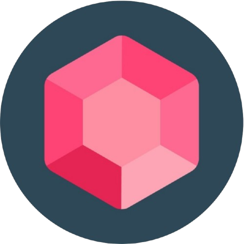
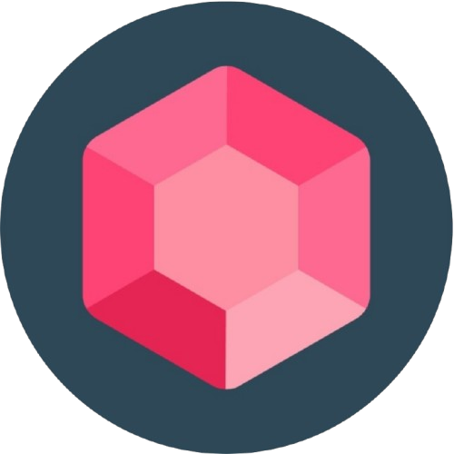
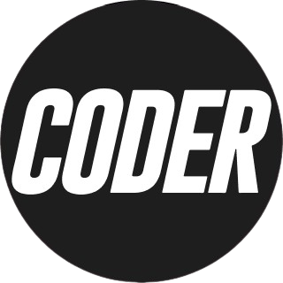
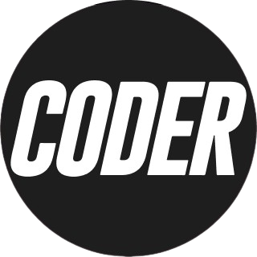

Preceptor
Colegio Thomas Jefferson - Temperley | 2023 - Actualidad
- Supervisión de comportamiento estudiantil.
- Seguimiento del progreso académico.
- Promoción de valores y normas escolares.
- Resolución de conflictos.
Temperley, Buenos Aires
Busco ser parte de un equipo comprometido a ir más allá de lo propuesto. Tengo en mi el compromiso de instruirme en las áreas que sean necesarias para lograr un máximo desarrollo en cada tarea que se me disponga a lo largo de mi vida laboral. Considero la empatía como un rasgo fundamental para mi día a día y convivir en creatividad constante.
Colegio Thomas Jefferson - Temperley | 2023 - Actualidad
Colegio Thomas Jefferson - Temperley | 2019 - Actualidad
C.E.N.S. Nro 467 - Banfield | 2023 - Actualidad
E.E.S. Nro 6 - Banfield | 2023 - 2024
E.E.S.T. Nro 3 - Claypole | 2019 - 2020
E.E.S. Nro 22 - Jose Marmol | 2019
Colegio Thomas Jefferson - Temperley | 2019 - 2023
Municipio de Lomas de Zamora - Lomas de Zamora | 2013 - 2023
Coderhouse - Buenos Aires | 2025 - Actualidad
Coderhouse - Buenos Aires | 2025 - Actualidad
Coderhouse - Buenos Aires | 2023 - 2024
U.C.E.S - Buenos Aires | 2018 - 2019
U.C.E.S - Buenos Aires | 2018 - 2019
Universidad ISALUD - Buenos Aires | 2018 - 2019
I.S.F.D. Nro 41 - Adrogue | 2011 - 2015


 

 
